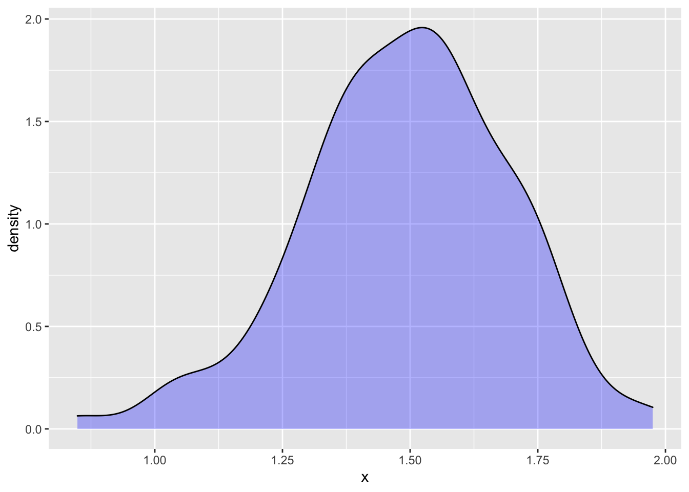

One <- sample(dag01, size=25)
Two <- do(10) * {
lm(y ~ x, data = sample(dag01, size=25)) %>%
coefficients()
}
Three <- Two %>%
summarize(mx = mean(x), sx = sd(x))Learning Checks Lesson 22
22.1 (Obj 20.3)
Consider these three data frames:
- Both
OneandTwohave columns calledx, but they stand for different things. Explain what the unit of observation is and what the values inxrepresent.. Threedoes not have a column namedx, but it is a summary of thexcolumn fromTwo. What kind of summary.
Solution
- In
One, thexcolumn contains the simulated of thexvariable fromdag01. The unit of observation is a single case, for instance a person for whom observations were made ofxandy. The simulation involves generating 25 rows of data: one row for each of 25 people. - In
Two, thexcolumn is the regression coefficient onxfrom the simulation. Each row ofTwocorresponds to one trial in which regression is being performed on a sample of size 25 of simulated data fromdag01. Threeis a summary of the 10 trials inTwo. The columns, namedmxandsx, tell about the distribution ofxacross all the trials.
22.2 (Obj 21.3)
Part 1
You are going to write a procedure that automates the following process:
- sampling from a DAG, specifically
dag01, usingsample()with a size of 25. - fitting a model
y ~ xusinglm() - reporting the coefficient on
xusingcoefficients().
Call the procedure proc1().
To do this fill in the following template in your Rmd document:
proc1 <- function() {
# your statements go here
}Once you have proc1() ready, you can carry out the procedure by giving a simple command:
proc1()Part 2
Now that you have proc1() ready and have tried it out, you are going to run the procedure 100 times repeatedly and look at the distribution in the x coefficient.
Of course, you could laboriously give the command proc1() 5 times, and write down the x coefficient each time. Far better, though, to automate the process of repeating and collecting the x coefficient.
You can do this easily by using do(5) in conjunction with proc1().
What’s the form in which the coefficients are collected when using
do()?Is the
xcoefficient the same from trial to trial? Explain why or why not.Change your statement to run 100 trials rather than just 5, and to store the collected results in a data frame called
Trials. Use appropriate graphics to display the distribution of thexcoefficient. Summarize the distribution in a sentence or two.Create a consise summary of the
xcolumn ofTrialsusingsummarize()withsd(x)to calculate the standard deviation. Compare the size of the standard deviation to the graphical display in (3).
Solution
Part 1
proc1 <- function() {
Dat <- sample(dag01, size=25)
Mod <- lm(y ~ x, data = Dat)
coefficients(Mod)
}or, more concisely
proc1 <- function() {
sample(dag01, size=25) %>%
lm(y ~ x, data = .) %>%
coefficients()
}Part 2
do(5) * proc1() Intercept x
1 3.993889 1.823723
2 3.781726 1.192576
3 4.152893 1.328287
4 3.663743 1.329055
5 3.718211 1.620334The results of the five trials are collected into a data frame.
The
xcoefficients varies from trial to trial.
Collect 100 trials
Trials <- do(100) * proc1()- An appropriate graphical display of the trials:
ggplot(Trials, aes(x)) + geom_density(fill="blue", alpha=0.3)
The x coefficient varies from near 0.5 to near 2.5 in a bell-shaped form.
- Summarize the trials by the standard deviation.
Trials %>% summarize(s = sd(x)) s
1 0.2005022The standard deviation is about 1/4 the width of the distribution.